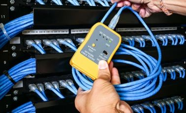

Instalación de Redes y Conectividad
En Mecatromedical SAC brindamos soluciones completas en instalación de redes domiciliarias y empresariales. Diseñamos e implementamos sistemas de cableado estructurado, redes LAN, conexiones inalámbricas y configuraciones de routers y switches.
Realizamos instalación de puntos de red RJ45, canaletas, racks, pruebas de conexión, distribución de señal y mejoras de cobertura WiFi. También integramos redes con sistemas de cámaras, impresoras, computadoras y servidores.
Trabajamos con materiales de calidad, cumpliendo estándares de seguridad y eficiencia para hogares, oficinas, clínicas, laboratorios y negocios.
